Panduan lengkap sistem pallet CLF Trading. Sistem ini menjejak setiap pallet: terima dari prinsipal → naik lori → hantar ke pelanggan → balik ke stor → pulang ke prinsipal. Halaman menunjukkan satu bahasa pada satu masa, Inggeris atau Bahasa Malaysia. Manual ini memetik butang Bahasa Malaysia persis seperti yang anda nampak. English version.
Dikemas kini 26 November 2026 untuk rupa baru halaman, suis EN | BM, tab Driver Sahkan, Pallet atas lori, Rekod pallet dan Ubah kuantiti.
Siapa guna apa: staf stor guna halaman Stor Pallet (telefon atau komputer). Pejabat dan pengurus guna halaman Dashboard Pallet. Dua-dua halaman berkunci: log masuk dengan ID Staf dan PIN. Driver guna borang POD macam biasa.
Dashboard Pallet, bahagian Stok pallet. Semua nombor dan nama dalam gambar manual ini adalah contoh.
Penting:Luar = sudah keluar dari syarikat. Ia bukan semestinya "di tangan pelanggan". Hanya bila pallet direkod untuk seorang pelanggan, barulah Dashboard senaraikan pallet itu di bawah pelanggan tersebut. Yang lain ditunjukkan sebagai Atas lori, pelanggan belum direkodkan.
Kitaran hidup pallet (aliran penuh)
Prinsipal hantar pallet → stor: tab Prinsipal, Terima Masuk (masuk Dalam)
Dalam → stor: tab Naik Lori, naik ke lori (jadi Luar) → driver hantar
Di pelanggan → driver, borang POD: Beri tinggalkan pallet / Ambil ambil balik pallet kosong
Lori balik → stor: tab Lori Balik (elok masuk Dalam, rosak masuk Rosak)
Bila sudah banyak → stor: tab Prinsipal, Hantar Balik (keluar dari syarikat, Jumlah turun)
2. Log masuk dan bahasa
Log masuk (dua-dua halaman)
Buka halaman. Kotak log masuk menutup halaman. Di Stor Pallet tertulis Stor Pallet dikunci. Di Dashboard Pallet tertulis Log masuk.
Taip ID Staf anda.
Taip PIN anda. Belum ada PIN? Tanya pejabat.
Tekan Log masuk. Di Stor Pallet, mesej hijau Log masuk berjaya menunjukkan nama anda.
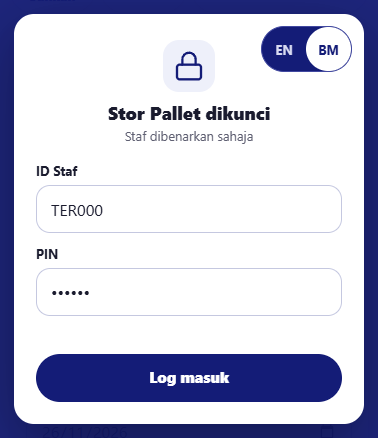
Kotak log masuk Stor Pallet. Suis EN | BM ada di atas kanan kotak.
Telefon atau komputer ini ingat anda. Sekali log masuk membuka Stor Pallet dan Dashboard Pallet dalam pelayar yang sama.
Kalau kotak itu keluar semula dengan Sesi tamat — log masuk semula, log masuk sekali lagi. Tiada apa-apa hilang.
Isi ID Staf dan PIN: satu daripada dua kotak itu kosong.
ID Staf atau PIN salah: kotak menunjukkan sebabnya dengan tulisan merah. Selepas 5 kali salah, log masuk dikunci 15 minit. Tunggu, kemudian cuba lagi. Kalau lupa PIN, tanya pejabat.
Gagal log masuk — semak internet dan cuba lagi: semak internet, kemudian tekan Log masuk sekali lagi.
Bahasa: EN | BM
Cari suis EN | BM: di atas kanan setiap halaman, dan pada kotak log masuk. Halaman dibuka dalam Bahasa Inggeris sehingga anda pilih.
Tekan BM untuk Bahasa Malaysia, atau EN untuk Inggeris.
Perkataan bertukar serta-merta. Apa yang sudah ditaip tidak hilang. Telefon ingat pilihan anda, untuk dua-dua halaman.
3. Staf stor (halaman Stor Pallet)
Halaman ini ada 7 tab: Kira Stok, Semak Baki, Rosak, Naik Lori, Driver Sahkan, Lori Balik, Prinsipal. Butang Dashboard di atas membuka Dashboard Pallet.
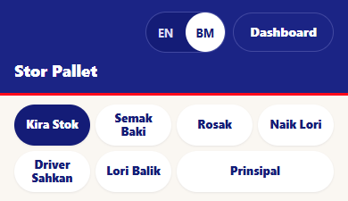
7 tab. Tab yang gelap ialah tab yang sedang dibuka.
Sama pada setiap tab:
Cara guna membuka tiga baris peringatan ringkas. Tekan sekali lagi untuk tutup.
Bintang merah (*) bermaksud kotak itu wajib diisi.
ID Staf diisi sendiri selepas log masuk, dengan tanda hijau dan nama anda di bawahnya. Kalau tertulis ID Staf tak dikenali, taip ID Staf anda semula.
3.1 Naik Lori: pallet naik ke lori
Hantar pallet dari Dalam naik ke sebuah lori, untuk satu shipment.
Tekan tab Naik Lori.
Tarikh: pilih hari shipment. Kalau dibiarkan kosong, halaman guna hari ini.
No. lori: taip nombor lori, cth. WTA 1234.
Tekan Cari Shipment. Tanda hijau dengan nombor shipment bermaksud shipment dijumpai. Tak perlu taip nombor shipment.
Baca baris di bawah butang: Belum ada pallet naik, atau Sudah naik: dengan pallet yang sudah ada atas lori.
Di bawah Pallet Naik Lori, tekan + atau − untuk set berapa setiap jenis pallet naik ke lori. Setiap baris tunjuk berapa yang ada Dalam sekarang.
Semak ID Staf menunjukkan nama anda.
Tekan Simpan Naik Lori. Mesej hijau Naik lori disimpan menunjukkan lori dan shipment.
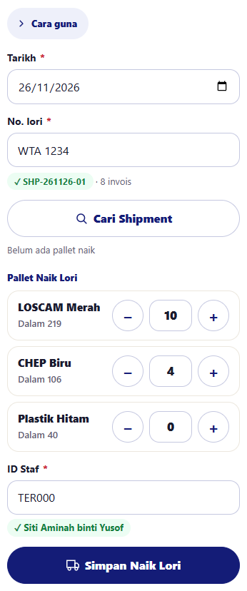
Naik Lori: shipment dijumpai, 10 dan 4 pallet sudah diset, sedia untuk tekan Simpan Naik Lori.
Tiada shipment untuk WTA 1234 pada 2026-11-26: semak no. lori dan tarikh, kemudian tekan Cari Shipment sekali lagi.
Lori itu ada beberapa shipment pada hari itu: halaman tulis shipment pada tarikh ini. Pilih satu:. Pilih yang betul daripada senarai.
Tak boleh naikkan lebih daripada yang ada. Halaman letak semula nombornya dan tunjuk Hanya ada 219 Dalam.
Tak dapat semak pallet yang sudah naik. Tekan Cari Shipment sekali lagi sebelum simpan.: buat itu dulu, supaya pallet yang sama tidak dinaikkan dua kali.
Kalau mesej kata ada baris yang TIDAK disimpan, mesej itu sebut namanya. Baris yang sudah disimpan jadi 0 semula. Tekan Simpan Naik Lori sekali lagi untuk simpan yang ini sahaja.
3.2 Driver Sahkan: driver sahkan pallet yang naik
Guna tab ini bila driver semak pallet bersama anda di stor. (Driver juga boleh betulkan jumlah sendiri di borang POD, lihat bahagian 5.)
Tekan tab Driver Sahkan.
Tarikh shipment: biarkan hari ini, kecuali lori keluar hari lain.
No. lori: taip nombor lori.
Tekan Cari Shipment. Di bawah Pallet Naik Lori ada satu baris bagi setiap jenis pallet, dengan Naik lori: 10.
Driver semak setiap baris. Jumlah betul: biarkan, butang Betul kekal hijau.
Jumlah salah: tekan − atau + sehingga Diterima menunjukkan jumlah yang driver betul-betul terima. (Tekan Betul untuk letak semula jumlah asal.)
Nama driver: taip nama driver.
Tekan Sahkan Terima. Mesej hijau Disahkan keluar.
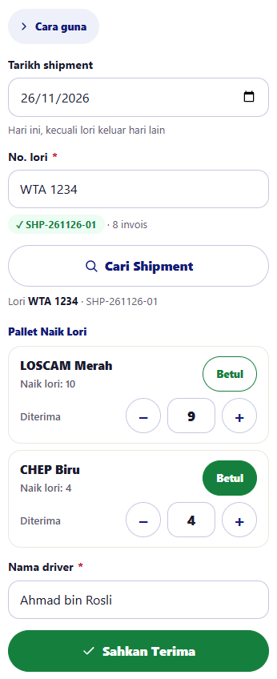
Driver Sahkan: driver terima 9 LOSCAM, bukan 10. CHEP betul.
Belum ada pallet naik untuk shipment ini: tiada pallet dinaikkan untuk shipment ini. Semak no. lori dan tarikh.
Kalau anda pilih hari lain, tanda jingga Bukan hari ini: 2026-11-25 keluar di sebelah shipment. Semak itu memang hari yang anda mahu.
Kalau ada baris yang TIDAK disahkan, hanya baris itu tinggal pada skrin. Tekan Sahkan Terima sekali lagi.
3.3 Lori Balik: terima dari lori
Bila lori balik, stor kira dan terima. Ini tempat semakan yang paling penting.
Tekan tab Lori Balik.
Tarikh shipment: biarkan hari ini, kecuali lori keluar hari lain. Kalau begitu, pilih hari itu.
No. lori: taip nombor lori.
Tekan Cari Lori. Di bawah Masih Atas Lori, setiap jenis pallet tunjuk Patut ada: dan satu nombor. Itu jumlah yang sepatutnya masih ada atas lori.
Kira pallet sebenar. Taip nombor di Elok dan Rosak.
Elok + Rosak = Patut ada: baris itu tunjuk Cukup.
Kurang daripada patut ada: baris itu tunjuk Kurang 2 — tinggal di pelanggan mana? Pilih pelanggan. Kuantiti di sebelahnya mesti sama dengan jumlah yang kurang.
Lebih daripada patut ada: baris itu tunjuk Lebih 1 — ambil dari pelanggan mana? Pilih pelanggan yang pulangkan pallet itu.
Tekan Terima Semua. Mesej hijau Diterima senaraikan setiap baris. Pallet elok masuk Dalam, pallet rosak masuk Rosak.
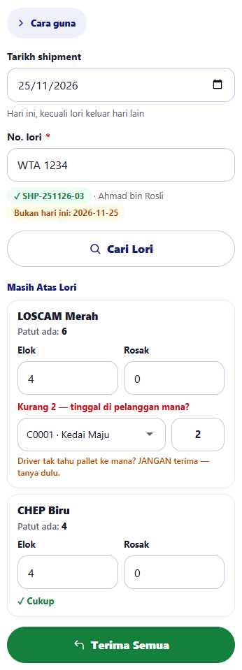
Lori Balik untuk lori yang keluar semalam (tanda Bukan hari ini). 2 LOSCAM kurang dan direkod kepada pelanggan yang simpan pallet itu.
Halaman itu sendiri beri amaran: Driver tak tahu pallet ke mana? JANGAN terima — tanya dulu. Langkah ini memang untuk memaksa perbualan itu, supaya pallet tidak hilang begitu sahaja.
Kalau anda tekan Terima Semua tanpa pilih pelanggan, tiada apa-apa disimpan. Mesej merah minta anda pilih pelanggan dan kata kuantiti mesti sama.
Selepas simpan, senarai dimuat semula. Tiada pallet atas lori ini bermaksud semua pallet shipment ini sudah dikira.
Halaman hanya terima satu pelanggan bagi setiap jenis pallet untuk pallet yang kurang. Kalau pallet itu ditinggalkan di dua pelanggan berlainan, beritahu pejabat sebelum terima.
Sebahagian TIDAK disimpan: Senarai dimuat semula. Kira semula yang masih ada.
Kalau senarai gagal dimuatkan, anda nampak kotak merah, bukan lori kosong:
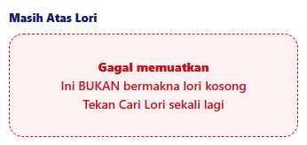
Gagal memuatkan bukan bermakna lori kosong. Semak internet dan tekan Cari Lori sekali lagi.
3.4 Prinsipal: hantar balik / terima masuk
Keluar-masuk pallet dengan syarikat pool (LOSCAM, CHEP).
Pilih
Bila guna
Kesan
Hantar Balik
Anda hantar pallet balik ke prinsipal: yang elok dari Dalam, atau yang rosak dari Rosak.
Stok turun.
Terima Masuk
Prinsipal hantar pallet masuk.
Stok naik (masuk Dalam).
Tekan tab Prinsipal.
Jenis pallet: pilih jenis pallet.
Tekan Hantar Balik atau Terima Masuk.
Untuk Hantar Balik sahaja: di bawah Hantar dari, tekan Dalam atau Rosak.
Taip kuantiti (Jumlah hantar atau Jumlah terima). Jalur di bawah kotak tunjuk baki selepas simpan.
No. rujukan: taip nombor DO atau nota prinsipal. Ini wajib.
Semak Tarikh dan ID Staf.
Tekan Hantar Balik Prinsipal (atau Terima daripada Prinsipal). Mesej hijau Dihantar balik ke prinsipal (atau Diterima daripada prinsipal) keluar.
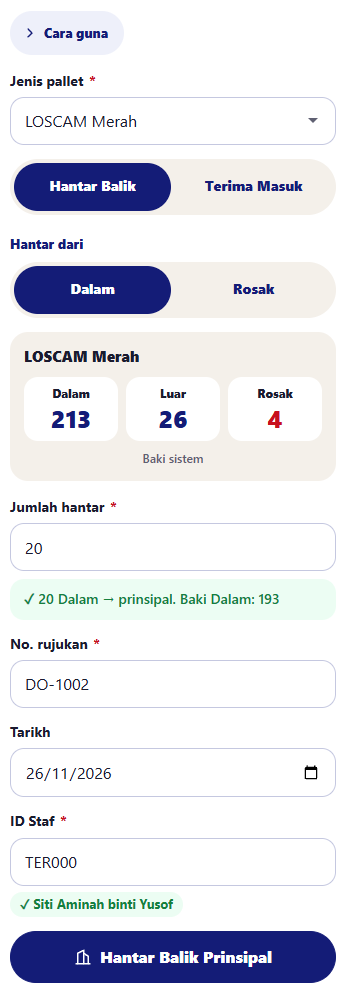
Hantar balik 20 pallet LOSCAM yang elok ke prinsipal, dengan nombor DO sebagai rujukan.
Isi no. rujukan: kotak rujukan kosong. Tiada apa-apa disimpan tanpa rujukan.
Tak boleh hantar lebih daripada yang ada: jalur tunjuk berapa yang ada, dan halaman tolak dengan Hanya ada 213 Dalam.
3.5 Kira Stok: sistem ikut kiraan anda
Kira Stokmenggantikan baki sistem dengan nombor yang anda kira. Rekod lama tidak dipadam.
Tekan tab Kira Stok.
Jenis pallet: pilih jenis pallet.
Status: tekan Dalam, Luar atau Rosak. Kad Baki sistem tunjuk apa yang ada dalam sistem sekarang.
Kiraan sebenar: taip nombor yang anda betul-betul kira. Jalur terus tunjuk bezanya.
Semak Tarikh dan ID Staf.
Tekan Simpan Kiraan.
Kalau kiraan anda tidak sama dengan sistem, satu kotak bertanya Tukar baki? Kotak itu tunjuk Sistem, Kiraan anda dan Beza. Baca nombornya.
Tekan Ya, simpan kalau betul. Tekan Batal untuk patah balik: tiada apa-apa disimpan.
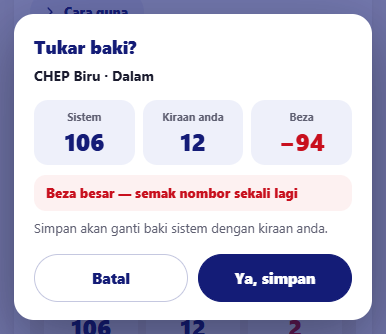
Kotak pengesahan. Di sini 12 ditaip, bukan 120: baris merah Beza besar — semak nombor sekali lagi menangkap kesilapan itu.
Selepas simpan, mesej hijau Kiraan disimpan menunjukkan baki baru.
3.6 Semak Baki: banding sahaja
Semak Baki hanya membandingkan kiraan anda dengan sistem dan merekod bezanya. Baki tidak berubah. Beza itu keluar di Dashboard di bawah Semakan stok untuk pejabat lihat.
Tekan tab Semak Baki.
Pilih Jenis pallet dan Status, sama seperti Kira Stok.
Kiraan sebenar: taip nombor yang anda kira.
Catatan: tambah catatan ringkas jika ada.
Tekan Simpan Semakan.
Sama dengan sistem: mesej hijau Sama. Selesai.
Tidak sama: mesej jingga Beza direkod, dan bahagian Laras Baki (Pengurus) terbuka di bawah.
Laras Baki (pengurus sahaja). Pengurus boleh laras baki sistem ikut kiraan sebenar:
PIN pengurus: pengurus taip PIN pengurus.
Sebab: taip sebabnya, cth. "salah kira".
Tekan Laras Baki. Mesej hijau Baki dilaras menunjukkan baki lama dan baki baru.
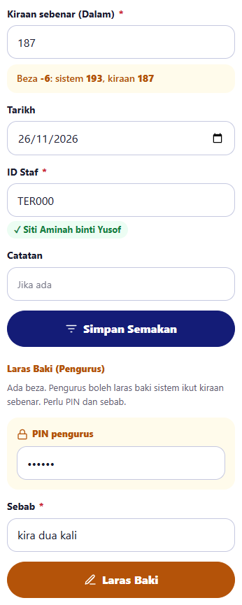
Semak Baki jumpa beza −6. Pengurus taip PIN dan sebab, kemudian tekan Laras Baki.
PIN salah atau kosong / Baki TIDAK berubah.: taip PIN pengurus yang betul dan tekan sekali lagi.
Dihantar — belum pasti: halaman tidak dapat jawapan. Semak baki dalam 1 minit sebelum hantar lagi.
3.7 Rosak: pallet rosak dan pallet siap baiki
Tanda pallet sebagai rosak (Dalam atau Luar → Rosak). Wajib ambil gambar.
Tekan tab Rosak.
Jenis pallet: pilih jenis pallet.
Pindah dari: tekan Dalam atau Luar.
Jumlah rosak: taip nombornya.
Gambar: tekan Ambil gambar dan ambil gambar bahagian rosak dengan jelas. Boleh tambah sehingga 10.
Sebab: tambah jika ada, cth. "kena forklift".
Semak Tarikh dan ID Staf.
Tekan Tanda Rosak. Mesej hijau Ditanda rosak keluar.
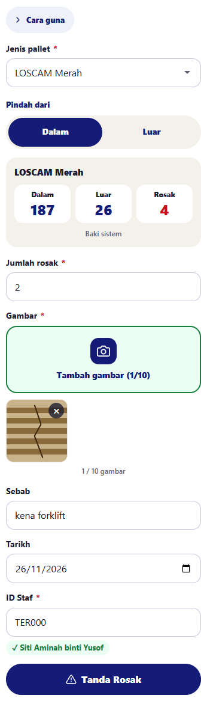
Rosak: 2 pallet, satu gambar ditambah (lukisan contoh), sedia untuk tekan Tanda Rosak.
Ambil sekurang-kurangnya 1 gambar: belum ada gambar. Tiada apa-apa disimpan tanpa gambar.
Dihantar — belum pasti / Semak Dashboard dalam 1 minit sebelum hantar lagi.: buat betul-betul begitu. Gambar anda masih ada pada skrin.
Pallet siap baiki (Rosak → Dalam), di bahagian bawah tab yang sama, di bawah Pallet Siap Baiki. Tak perlu gambar.
Jenis pallet: pilih jenis pallet.
Jumlah siap baiki: taip nombornya. Tak boleh lebih daripada nombor Rosak pada kad.
Semak Tarikh dan ID Staf.
Tekan Tanda Siap Baiki. Mesej hijau Siap baiki keluar.
3.8 Bila tidak disimpan atau gagal dimuatkan
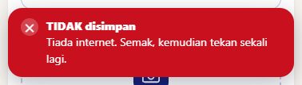
Mesej merah sentiasa beritahu apa yang perlu dibuat.
TIDAK disimpan dengan Tiada internet. Semak, kemudian tekan sekali lagi.: semak internet, kemudian tekan butang yang sama sekali lagi. Ini selamat. Kalau cubaan pertama sebenarnya sudah sampai ke sistem, jawapannya Sudah disimpan tadi dan ia tidak direkod dua kali.
TIDAK disimpan dengan sebab lain: baca sebabnya, betulkan, tekan sekali lagi.
Gagal memuatkan: halaman tidak dapat baca data. Ia bukan kosong. Semak internet dan tekan Cari Shipment atau Cari Lori sekali lagi.
Dihantar — belum pasti (langkah gambar dan PIN pengurus): tunggu 1 minit dan semak dulu. Hantar lagi hanya kalau memang tiada.
4. Pejabat dan pengurus (halaman Dashboard Pallet)
Tekan gambar yang lebar dalam bahagian ini untuk lihat saiz penuh.
Dashboard untuk dibaca. Hanya satu perkara boleh diubah di sini: kuantiti satu rekod, oleh pengurus (4.7).
Muat semula membaca nombor terbaru. Di sebelahnya tertulis bila nombor dibaca, cth. Dikemas kini 10:05.
Kalau Muat semula tidak buat apa-apa sejurus selepas anda log masuk di halaman ini, muat semula halaman sekali.
Apa maksud nombor ini? di bawah sesuatu bahagian membuka penerangan ringkas.
Stor Pallet di atas membuka halaman stor.
Bahagian-bahagiannya, dari atas ke bawah: Stok pallet, Semakan stok, Pallet atas lori, Luar ikut pelanggan, Ikut jenis pallet, Rekod pallet, Rekod pelarasan.
4.1 Stok pallet
4 nombor untuk seluruh syarikat: Dalam, Luar, Rosak, Jumlah. Lihat bahagian 1.
4.2 Semakan stok
Menunjukkan setiap kiraan daripada tab Semak Baki di stor yang tidak sama dengan sistem dan masih belum selesai.
Semua sama — tiada beza.: tiada apa perlu dibuat.
Kalau tidak, ada jadual: Sistem = apa yang ada dalam sistem, Fizikal = apa yang stor kira, Beza = Fizikal − Sistem.
Baris merah dengan tanda tolak = pallet kurang. Baris kuning dengan tanda tambah = pallet lebih.
Ikut jenis pallet: satu kad bagi setiap jenis pallet.
4.6 Rekod pallet (ikut bulan)
Semua rekod pallet bagi satu bulan, terbaru di atas. Guna untuk lihat siapa rekod apa, dan untuk cari rekod yang salah.
Skrol ke Rekod pallet. Ia dibuka pada bulan ini.
Bulan lain: tekan ‹ untuk bulan sebelum, › untuk bulan berikut, atau pilih bulan daripada senarai (36 bulan terakhir).
Satu jenis rekod sahaja: buka senarai Semua tindakan dan pilih satu, cth. ASSIGN.
Rekod yang diubah sahaja: tanda Yang diubah sahaja.
Bilangan rekod yang ditunjukkan ada di kanan, cth. 13 rekod. Lajur: Tarikh, Tindakan, Pallet, Dari → Ke, Kuantiti, Lori · Pelanggan, Oleh (siapa yang rekod), Diubah. EXT = luar CLF (prinsipal).
Rekod pallet. Rekod 18 Nov pernah diubah: kuantiti asal dipotong, kuantiti baru, siapa, bila dan kenapa.
4.7 Ubah kuantiti (pengurus sahaja)
Untuk rekod yang kuantitinya salah, cth. salah taip. Perlu PIN pengurus dan sebab. Angka stok ikut berubah serta-merta.
Di Rekod pallet, cari rekod itu. Guna bulan dan senarai tindakan supaya lebih cepat jumpa.
Tekan Ubah di hujung barisnya. Kotak Ubah kuantiti terbuka. Ia tunjuk rekod itu dan kuantiti Sekarang.
Kuantiti baru: taip nombor yang betul (nombor bulat, 0 atau lebih).
Sebab: taip kenapa anda ubah.
PIN pengurus: pengurus taip PIN pengurus.
Tekan Simpan. (Batal menutup kotak dan tidak ubah apa-apa.)
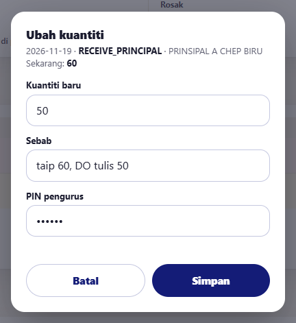
Ubah kuantiti: 60 tersalah taip, DO tulis 50.
Bila sudah disimpan, baris hijau tulis Disimpan: kuantiti 60 → 50. dan seluruh Dashboard dibaca semula. Baris itu sekarang tunjuk kuantiti asal dipotong, kuantiti baru, dan di bawah Diubah: siapa yang ubah, bila, dan kenapa. Kuantiti asal tidak pernah hilang.
Selepas simpan: baris 19 Nov tunjuk 60 dipotong, 50, dan siapa / bila / kenapa.
Apa yang ditolak:
Tiada butang Ubah pada: rekod REVERSE dan ACCEPT, rekod yang dibatalkan, dan muatan yang pemandu sudah betulkan. Rekod ini tidak boleh diubah.
Bawah sifar. Kalau kuantiti baru menyebabkan stok pallet itu jadi bawah sifar, tiada apa-apa disimpan. Mesejnya bermula Tidak disimpan: stok pallet ini akan jadi bawah sifar dan memberi angkanya. Mungkin ada rekod lain untuk pallet ini yang juga salah: betulkan rekod itu dahulu.
PIN pengurus salah. Tiada perubahan dibuat.: taip PIN yang betul dan tekan Simpan sekali lagi. Selepas 5 kali PIN salah, fungsi ubah dikunci selama 15 minit. Tunggu, kemudian cuba lagi.
Sama seperti sekarang. Tiada perubahan. / Masukkan sebab. / Masukkan PIN pengurus. / Masukkan nombor bulat, 0 atau lebih.: isi kotak yang disebut.
Sesi log masuk tamat. Tiada perubahan dibuat. Muat semula halaman dan log masuk semula.: buat begitu, kemudian ubah sekali lagi.
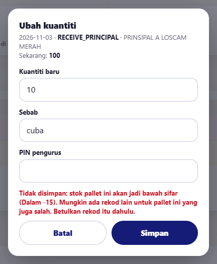
Ditolak: perubahan itu akan menyebabkan stok jadi bawah sifar. Tiada apa-apa disimpan.
Tiada jawapan daripada sistem. Kalau halaman tidak dapat jawapan, kotak kekal terbuka dengan mesej ini:
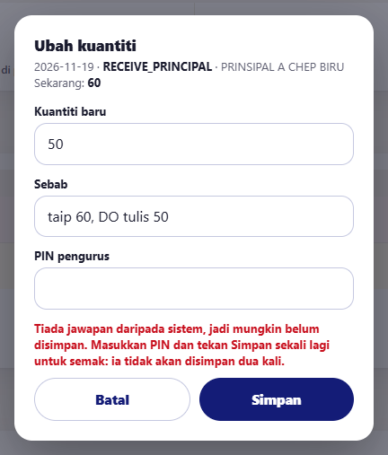
Tiada jawapan: taip PIN semula dan tekan Simpan sekali lagi.
Biarkan kuantiti dan sebab seperti yang ada.
Taip PIN pengurus semula.
Tekan Simpan sekali lagi. ia tidak akan disimpan dua kali: perubahan dibuat sekali sahaja.
Kalau Rekod pallet tunjuk Fungsi ubah belum dihidupkan. dan tiada butang Ubah, beritahu pejabat.
4.8 Rekod pelarasan
Senarai pembetulan oleh pengurus dan pejabat: siapa, bila, kenapa.
Tekan Buka senarai. (Tutup senarai menutupnya.)
Tekan Semua, ADJUST, REVERSE, OPENING atau RECONCILE untuk lihat satu jenis sahaja.
ADJUST = pelarasan manual. REVERSE = batalkan rekod. OPENING = baki pembukaan. RECONCILE = pembetulan selepas kira stok.
Rekod yang disahkan dengan PIN berada di atas sekali dan bertanda PIN.
Senarai ini hanya tunjuk rekod mulai 25 Nov 2026. Pembetulan yang lebih lama tidak ditunjukkan di sini. Ia masih ada dalam rekod, dan boleh dilihat bulan demi bulan di Rekod pallet.
Tiada rekod pelarasan sejak 25 Nov 2026.: belum ada apa-apa untuk ditunjukkan.
Rekod pelarasan, senarai terbuka, dengan penerangan dibuka.
4.9 Bila Dashboard gagal dimuatkan
Bahagian yang tidak dapat dibaca tulis Belum dimuatkan. Tekan Muat semula. Ia tidak tunjuk 0, dan ia bukan kosong. Untuk lori ia tambah Bukan bermakna tiada.
Satu baris di atas tulis Sebahagian data gagal dimuatkan. Bahagian bertanda "Belum dimuatkan" bukan kosong. Tekan Muat semula.
Tidak dapat sambung ke sistem. Semak internet, kemudian tekan Muat semula.: buat begitu.
Pada kad pallet, "—" = belum dimuatkan, bukan 0. Tekan Muat semula.
Sebahagian data gagal dimuatkan. Tekan Muat semula. Jangan baca bahagian ini sebagai "tiada".
5. Driver (borang POD)
Driver tak perlu buat benda rumit. Kerja pallet ikut sahaja aliran penghantaran. Gambar langkah-langkah ini ada dalam manual driver POD.
1. Pallet atas lori: kalau jumlah betul, tak perlu buat apa-apa
Driver buka borang POD macam biasa. Bila stor sudah naikkan pallet untuk shipment itu, kotak Pallet atas lori senaraikan pallet itu di atas senarai kedai.
Jumlah betul: tak perlu buat apa-apa. Kotak itu tulis Betul? Tak perlu buat apa-apa.
Jumlah salah: tekan Jumlah salah? Betulkan.
Tukar setiap nombor kepada jumlah yang anda betul-betul terima.
Tekan Hantar jumlah sebenar. Mesej hijau Pembetulan dihantar keluar.
2. Beri / Ambil di kedai (+ foto)
Isi bahagian ini sebelum tekan Simpan pada kad kedai. Pallet dihantar bersama Simpan.
Pada kad kedai, tekan Ada pallet di kedai ini?
Pilih jenis pallet.
Beri = berapa pallet anda tinggalkan di kedai ini. Ambil = berapa pallet kosong anda ambil balik.
Foto pallet (pilihan): ambil satu sebagai bukti. Sangat digalakkan, senang kalau ada pertikaian nanti.
Tekan Simpan. Mesej hijau Pallet direkod (atau Pallet diambil) keluar.
Pallet tidak sekali-kali menghalang penghantaran. Kalau mesej merah tulis Pallet TIDAK direkod, POD tetap disimpan. Mesej itu tulis: POD sudah disimpan. Beritahu pejabat jumlah pallet. Buat begitu.
3. Bawa pallet balik ke stor
Driver tak perlu "pulang" pallet dalam sistem. Bawa balik sahaja pallet yang tak sempat dihantar dan yang diambil balik. Stor terima dengan tab Lori Balik (3.3).
Halaman lama driver "Pulang Pallet" sekarang hanya satu notis:
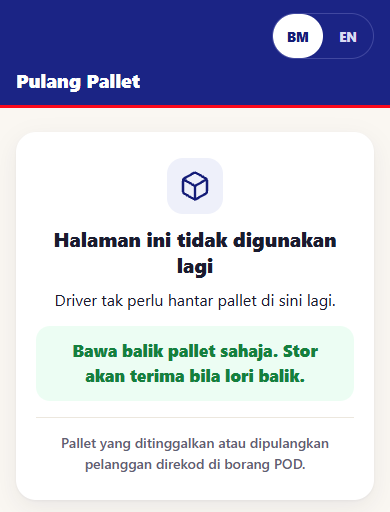
Halaman lama Pulang Pallet: Halaman ini tidak digunakan lagi.
6. Beberapa peraturan tegas
Pallet hilang tanpa sebab: masa terima lori, tanya sampai jelas, dan rekod kepada pelanggan yang simpan pallet itu. Jangan terima buta-buta.
Keluar-masuk pallet dengan prinsipal mesti ada No. rujukan. Itu bukti anda bila semak dengan syarikat pool nanti.
Laporan rosak mesti ada gambar.
Rekod tidak pernah dipadam. Nombor stok yang salah dibetulkan dengan Kira Stok, atau Semak Baki dan Laras Baki. Kuantiti yang salah dalam satu rekod dibetulkan oleh pengurus di Rekod pallet. Setiap perubahan menyimpan siapa, bila dan kenapa.
TIDAK disimpan bermaksud tidak disimpan. Tekan butang yang sama sekali lagi. Jangan taip rekod itu kali kedua dengan cara lain.
Gagal memuatkan dan Belum dimuatkan tidak pernah bermaksud "tiada". Muat semula dulu sebelum buat apa-apa keputusan.
PIN anda peribadi. Jangan pinjamkan. Kalau orang lain tahu PIN anda, beritahu pejabat.
CLF Trading · Sistem Pallet · Manual ini ditulis mengikut butang sebenar sistem (26 Nov 2026) · Jika sistem dikemas kini, ikut skrin.